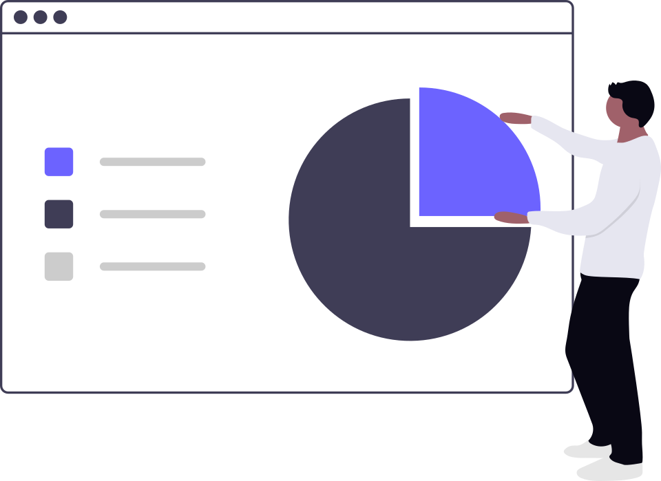
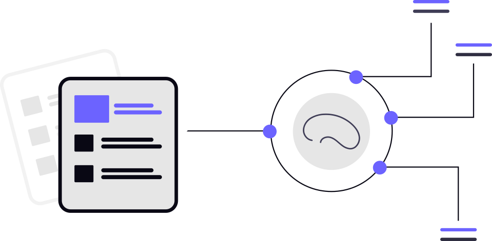

MACHINE LEARNING · PYTHON
Insurance Lapse Predictive Modeling
Analyzed 228,000 insurance records using Random Forest and LASSO models to identify at-risk policyholders and improve churn detection through threshold tuning.
View project ↗DATA · ACTUARIAL · AI
I'm Hope Tatenda Mutema, a data analyst exploring analytics, risk modeling, and artificial intelligence to solve practical problems and support better decisions.
CURRENT FOCUS
228K
insurance records analyzed
3
featured projects
AI
research, automation, and NLP
SELECTED WORK

MACHINE LEARNING · PYTHON
Analyzed 228,000 insurance records using Random Forest and LASSO models to identify at-risk policyholders and improve churn detection through threshold tuning.
View project ↗AGENTIC AI · AUTOMATION
Built an AI-powered platform using agentic workflows and n8n to automate data extraction and deliver personalized academic recommendations for students.
View project ↗
NLP · RESEARCH · TEXT ANALYSIS
Applied text analysis and natural language processing to examine CRPD alternative reports and identify patterns across disability-rights reporting.
View project ↗ABOUT ME
I am a data analyst and AI researcher with a background in applied mathematics and economics, currently pursuing graduate studies in Business Analytics and AI.
My work spans statistical modeling, machine learning, research analytics, automation, and data visualization. I enjoy turning complex datasets into clear insights and building systems that support better decision-making.
EXPERIENCE
2026 – Present
Institute on Disability and Public Policy
Building LLM-powered analytics for disability-rights research and the CRPD Global Disability Rights Dashboard.
2025 – Present
American University
Supporting advanced text analytics, AI, research methods, surveys, interviews, and data analysis.
2025
Zimbabwe Revenue Authority
Worked across Domestic Taxes and Customs with exposure to public-sector analytics and tax administration.
2023 – 2024
ZB Financial Holdings
Applied data analysis, business intelligence, pricing, underwriting, and risk assessment in financial services.
CONTACT
I'm interested in conversations around data, analytics, AI, research, and meaningful projects.